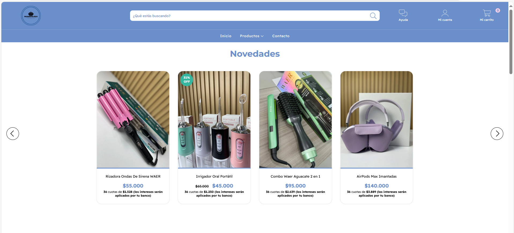

Aquí puedes conocer más sobre cada uno de los proyectos que he desarrollado en electrónica, robótica y desarrollo web.
Sistema de Riego Automático con Arduino
Este proyecto utiliza un Arduino UNO, un sensor de humedad y una bomba de agua
para automatizar el riego de plantas.
El código en C++ detecta el nivel de humedad del suelo y activa el riego solo cuando es necesario,
optimizando el consumo de agua.
Robot Seguidor de Línea
El robot seguidor de línea funciona con sensores infrarrojos conectados a un Arduino.
El algoritmo en C++ permite que el robot detecte y siga un camino negro sobre superficie blanca.
Es un ejemplo de cómo aplicar lógica de control y robótica básica.
Desarrollo de Página Web para PickDigitalTech

Creación de una página web moderna y responsiva para la marca PickDigitalTech.
Incluye diseño con HTML, CSS y JavaScript, además de optimización SEO y experiencia de usuario mejorada.
Es un ejemplo de mis habilidades en desarrollo web frontend.